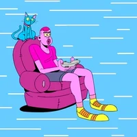

My name is Austin Sheppard and thank you for visiting my site. Like most fighting game fans, I enjoy a perfect execution of a combo that I spent hours working on in practice mode. A lot of times, we can naturally make a nice combo string out of our favorite inputs. But often, we may need to see what other players are executing to help guide our own growth. In order to take your damage output to the next step, tutorials become necessary to get a few tools to add to your arsenal. Having a more advanced combo can help you stay ahead of competition. Hopefully the combo provided on this website will become a useful key to your future victories.
Mortal Kombat 11 is a fighting game that came out on April 23rd, 2019. It is made by Netherrealm Studios and, contrary to the title, it is the 23rd entry in a growing catelouge of games since its conception in 1992. The franchise underwent a soft reboot with 2011's "Mortal Kombat" entry which was also a period that the company was changing from Midway to Netherrealm Studios. MK 11 is a traditional toe-to-toe fighting game with a healthy roster of characters that provide many different playstyles for consumers to try. It is one of the consistent games that are played in popular game tournaments.
I chose Liu Kang as the combo example in this game for a few different reasons. The first being that he is one of my top three favorite characters, alongside Goro and Mileena. Another reason is that outside of the popular Scorpion and Sub-Zero, he is one of the most known characters since he is the primary protaganist in the majority of the entries, and his likeness is derived from one of the most influential people in modern history; Bruce Lee. Along with his appeal, he is a well rounded character with easy to learn moves. He is known as a "Rushdown" character, but he has other tools in his kit for people who may want to zone or play a different style. I enjoy his move set because of the heavy martial arts influence and his trademark sounds when performing his moves.
I am an average gamer and fan of many fictional properties. I have enjoyed MK for years, but also enjoy other genres of games as well. I play FPS, MOBAs, RPGs, strategy, and a few sports games, among others. Lately I have been rekindling my love hate relationship with Battle Royale games. I would like to branch out into more of the lesser known titles, but they mainly exist on PC and my computer is not made for anything better than minesweeper. Outside of games, I enjoy watching comedy stand-ups, action, sci-fi, anime, and fantasy movies and shows. Right now I am watching Snowfall and will start the new season of You right after. My significant other has got me into murder mysteries and the Voice, so those occupy my time as well. I like to hang out with family and eat good food. I am more of a homebody, but I am willing to try most things at least once. I like to play basketball, but haven't played regularly since the beginning of Covid. One of my favorite times of the day is cleaning a big batch of dishes while listening to one of my favorite podcast.
Hopefully you all have enjoyed the content of this site and I look forward to any and all comments and feedback. Thank you and enjoy your day.
